Correlation is NOT Causation…It May Not Even Be Correlation
analysis
r
statistics
Author
John Yuill
Published
March 24, 2024
Modified
March 24, 2024
Intro
Most people recognize that correlation does not imply causation, and that if correlation between two variables is detected, further steps must be taken to determine if there is indeed a causal relationship.
But before we even get to pinning down causation, there are importantsteps to ensure that the correlation is valid. Correlation calculations are based on specific assumptions that, if not met, render the outcome of these calculations less than reliable. Proceeding without checking these assumptions can lead to erroneous conclusions and bad decisions.
So let’s talk about how we can dig into these assumptions and check how solid the ground is that we are standing on when referencing a correlation coefficient.
The Point of Correlation
A correlation coefficient is intended to summarize the presence, strength and direction of a relationship between two variables. This has a variety of applications, including predictive analysis. While you can’t predict the value of one variable from another based on a correlation coefficient alone - you need linear regression (or related method) for that - you can form an expectation of how one variable will change (or not) based on changes in the other.
For example, if you have a strong correlation between variables (say greater than 0.5) you can:
make decisions based on expectation that as one variable rises, the other will as well, even in the absence of direct causality.
take actions to influence one variable in hopes of influencing the other, possibly as a test of causality.
use this information to include or exclude a variable in a statistical model, such as linear regression, causal impact, and more.
If the correlation coefficient is not a reliable summary of the relationship, this can lead to incorrect assumptions, wasted time and effort, and unexpected negative consequences due to decision-making based on faulty information.
So this is why it is important to understand when we can rely on a correlation calculation, and when we can’t.
The Six Assumptions
There are different ways to calculate correlation, but by far the most common is the Pearson Correlation Coefficient for linear correlation. This is the formula that results in the famous ‘r’ value, ranging from 1 to -1, where 1 is perfect positive correlation (same direction), -1 is perfect negative correlation (opposite direction) and 0 is no correlation. Importantly, the accuracy of this calculation depends on several key assumptions, nicely described by chatGPT:
“For the Pearson correlation coefficient to provide meaningful and reliable results, several key assumptions must be met:
Linearity: The relationship between the two variables is linear, meaning the best-fit line through the data points is a straight line. This implies that as one variable increases or decreases, the other variable does so in a consistent manner.
Homoscedasticity: The variances along the line of best fit remain similar as we move along the line. This means that the spread (variance) of data points around the line of best fit is roughly constant across all levels of the independent variable.
Normality: The Pearson correlation assumes that both variables are normally distributed. More specifically, the assumption is about the normality of the distribution of values for each variable, and ideally, the joint normality of the two variables. However, in practice, it’s the distribution of the variables themselves that’s most scrutinized.
Interval or Ratio Scale: Both variables should be measured on either an interval or ratio scale. This means that the variables should represent numeric values where meaningful amounts of differences between measurements can be determined.
Absence of Outliers: Outliers can have a disproportionate effect on the correlation coefficient, pulling the line of best fit and therefore the correlation measure in their direction. It’s important that there are no outliers in the data, or that their impact is minimized, perhaps through robust statistical techniques.
Independence of Observations: Each pair of observations is independent of each other pair. This means the data points collected do not influence each other, which is particularly relevant in time-series data where this assumption might be violated due to autocorrelation.
When these assumptions are not met, the Pearson correlation coefficient might not be the appropriate measure of association between two variables.”
Look at the Data
First and foremost: look at the data. This is the beautifully illustrated with Anscombe’s quartet, where each data set has the same Pearson’s correlation value (among other summary metrics).
Code
## put functions hereans_cor <-function(data, x, y, anum) { xe <-enquo(x) # convert var reference ye <-enquo(y) # convert var reference xes <-as.character(xe)[2] # convert to string for use in annotation yes <-as.character(ye)[2] x_lab <-max(data[[xes]])*0.75# set x location for annotation y_lab <-max(data[[yes]]*1.05) # set y location for annotation plot <- data %>%ggplot(aes(x=!!xe, y=!!ye))+geom_point()+geom_smooth(method='lm', se=FALSE)+geom_smooth(method='loess', se=FALSE, color='green', linetype='dashed', size=0.8)+stat_cor()+annotate(geom='text',y=y_lab, x=x_lab, label=anum, size=8, color='red') plot}# run functions to get infoa1 <-ans_cor(data=ans, x=x1, y=y1, anum='I')a2 <-ans_cor(data=ans, x=x2, y=y2, anum='II')a3 <-ans_cor(data=ans, x=x3, y=y3, anum='III')a4 <-ans_cor(data=ans, x=x4, y=y4, anum='IV')
Here are the Anscombe quartet charts - blue line is linear regression, green line is a loess smoothed line as reference. Ideally, it should track close to the blue line if linearity is strong.
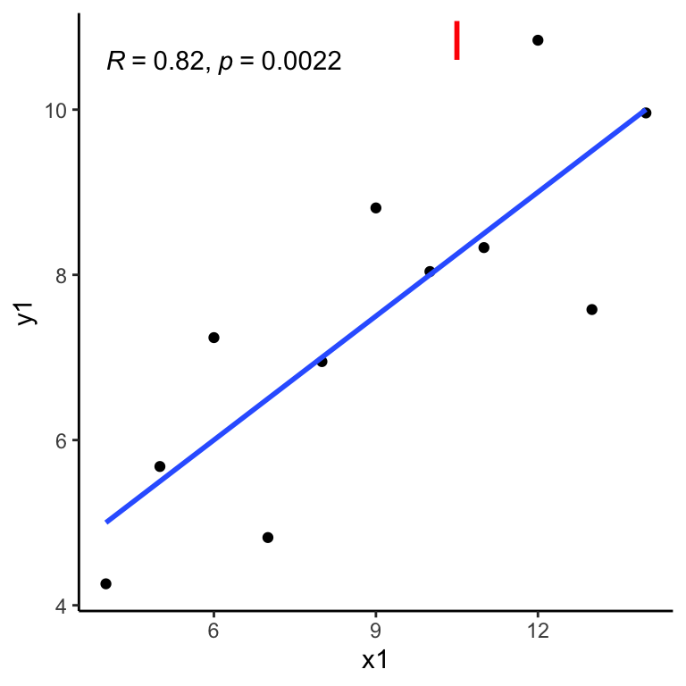
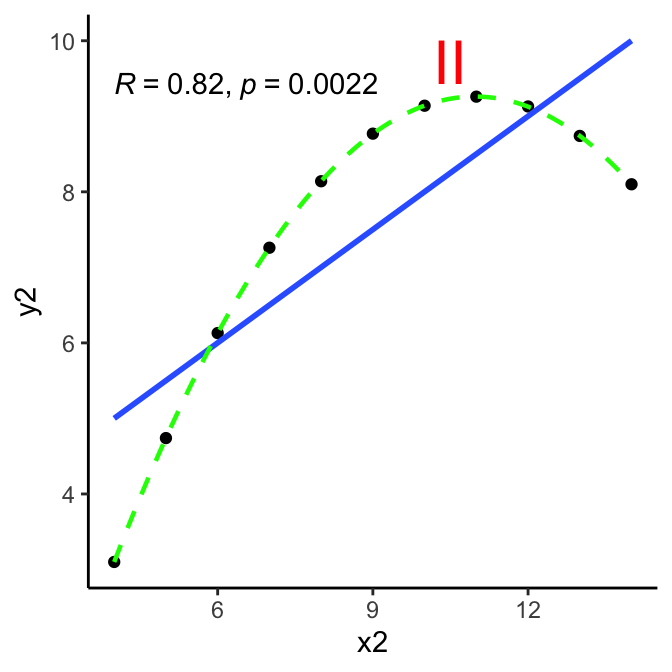
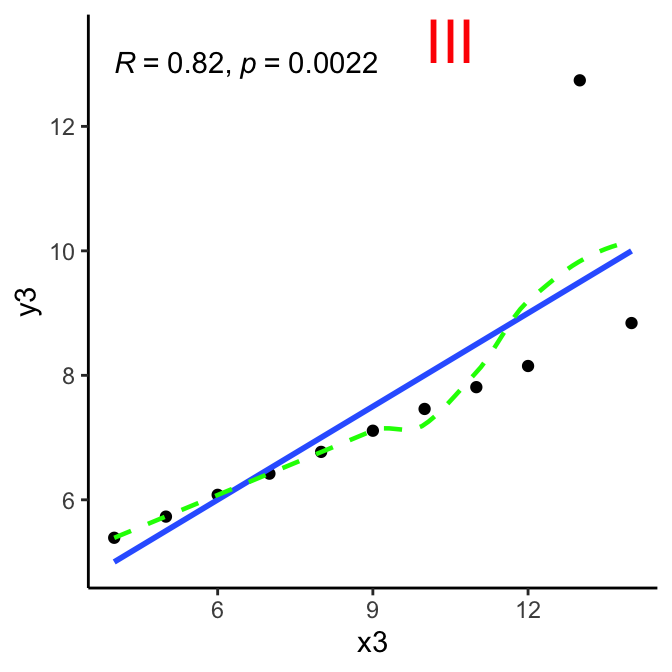
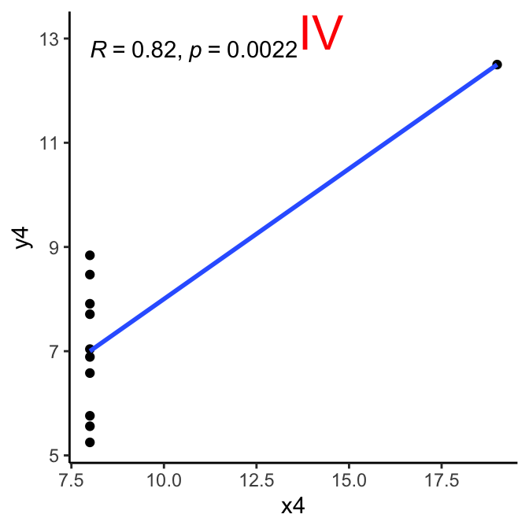
Checking Assumptions
So clearly some reason for skepticism about whether the assumptions hold up in most of these cases. Let’s take a closer look, one at a time:
Linearity of relationship
criteria: relationship between the two variables is linear, best-fit line through the data points is a straight line, as one variable increases or decreases, other variable does so in a consistent manner.
method: visual inspection via scatterplot, preferably with linear regression line.
conclusion:
I:somewhat.
II:no; at lower x values but then inverts.
III:yes - except outlier.
IV:no.
So right away that knocks out cases II and IV:
Pearson correlation coefficient between variables is NOT going to be a useful, reliable statistic for understanding the relationship between the variables involved.
Let’s continue on with testing further assumptions focusing on cases I and III (with cases II and IV for additional reference).
Homoscedasticity
criteria: variances along the line of best fit remain similar as we move along the line; spread (variance) of data points around the line of best fit is roughly constant.
method: residuals plot, Breusch-Pagan test
Code
homoScedTest <-function(data, x, y, anum) { xe <-enquo(x) # convert var reference ye <-enquo(y) # convert var reference xes <-as.character(xe)[2] # convert to string for use in annotation yes <-as.character(ye)[2] x_lab <-max(data[[xes]])*0.75# set x location for annotation y_lab <-max(data[[yes]]) # set y location for annotation formula <-paste0(quo_name(ye), " ~ ", quo_name(xe))# calculate model model <-lm(formula, data=data)# add residuals and fitted values to the data for plotting data$residuals <-residuals(model) data$fitted <-fitted(model) x_lab <-min(data$fitted)+0.5 y_lab <-max(data$residuals)## generate plot plot <- data %>%ggplot(aes(x=fitted, y=residuals))+geom_point()+geom_hline(yintercept=0, linetype='dashed', color='red')+geom_segment(aes(xend=fitted, yend=0), alpha=0.5)+annotate(geom='text',y=y_lab, x=x_lab, label=anum, size=8, color='red')+labs(x='Fitted Values', y='Residuals', title='Residual Plot')+theme_minimal()# Breusch-Pagan test for homoscedasticity bpt_results <-bptest(model)# put results in table bpt_row <-data.frame(case=anum, BP_statistic=bpt_results$statistic, p_value=bpt_results$p.value)row.names(bpt_row) <- anum bpt_row <- bpt_row %>%mutate(conclusion=ifelse(p_value>0.05,"Homoscedasticity: null hypothesis holds.","Homoscedasticity issues: null hypotheis fails.") )# return results from plot and BP testlist(plot=plot, bpt=bpt_results,bpt_row=bpt_row)}#anss <- homoScedTest(ans, x1, y1, 'I')#anss$plot#anss$bpt
Let’s take a look at residuals plotted over the fitted values y volumes. In other words, using a simple linear regression model to predict the y-values based on x-values, what are the differences between the predicted values vs actual values provided? These are the residuals. In context of homoscedasticity, is there a balanced pattern in the residuals, OR are they changing (in particular growing) as we move to higher values of prediction?
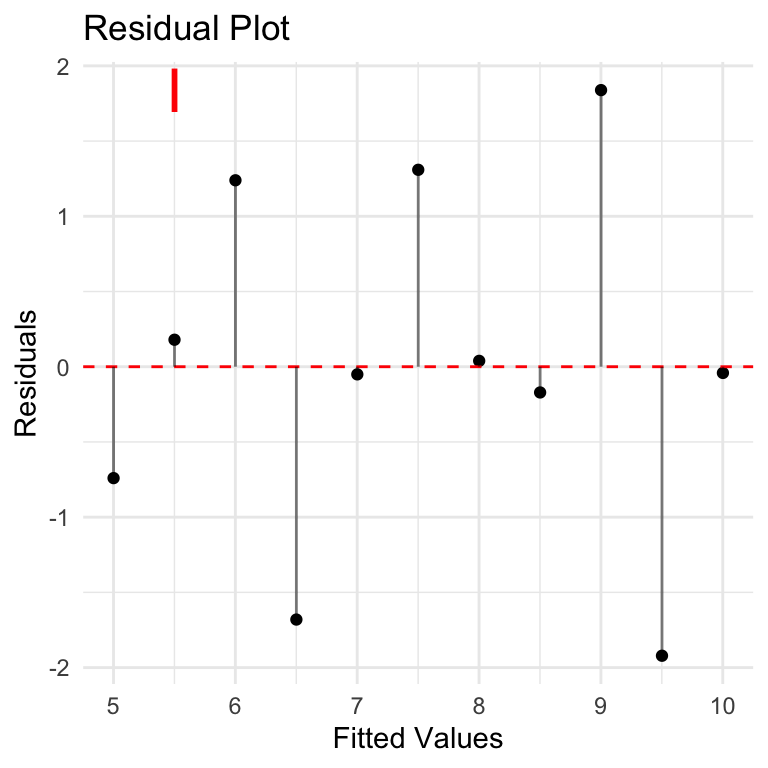
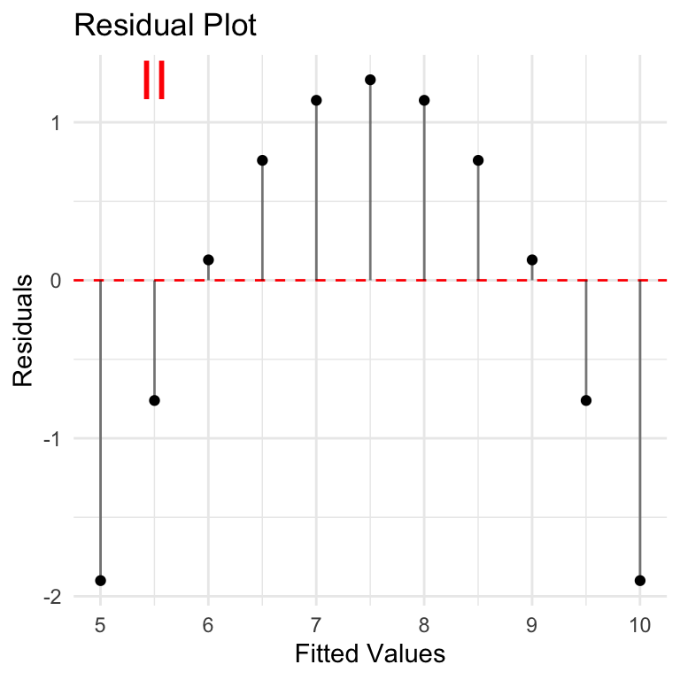
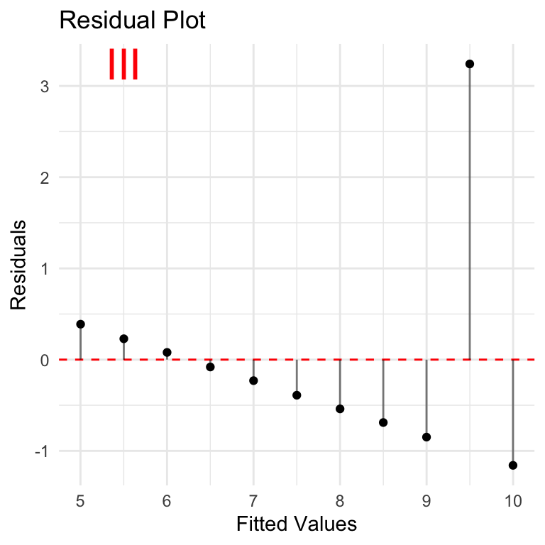
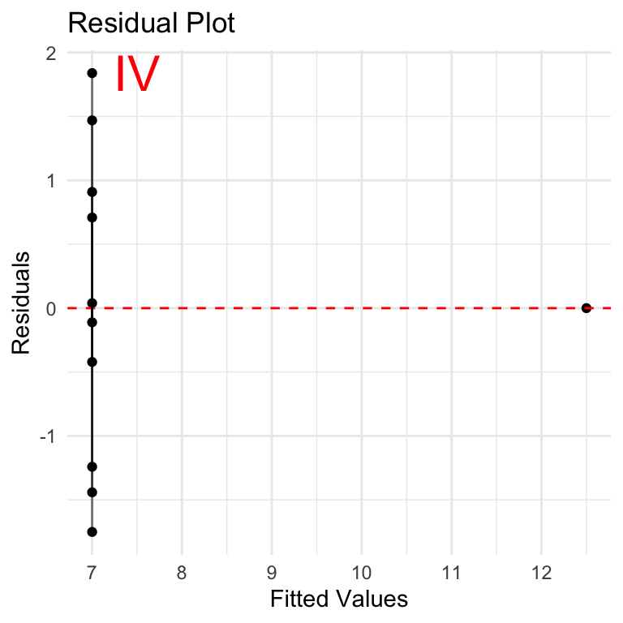
None of these look very good from a residuals point of view. Case I is the closest although residuals seem to be increasing as we move along the y-axis. This is especially important if we want to understand if the correlation will hold over larger values.
Breusch-Pagan Test
Breusch-Pagan is a statistical test that can be used to assess homoscedasticity. The NULL hypothesis is that the residuals have homoscedasticity (consistency in residuals), and the test evaluates how well the dataset supports this hypothesis. A p-value is used to estimate the likelihood that the current dataset is consistent with the NULL hypothesis. Low p-value (<0.05) indicates that the NULL hypothesis is not supported and the data is likely NOT homoscedastic and the assumption required for Pearson Correlation does not hold.
Results here are interesting: NULL hypothesis of homoscedasticity is upheld, to varying degrees for each case, including case 2 where p-value = 1.
Homoscedasticity conclusion:
Based on residuals plots, there are clearly issues with homoscedasticity to varying degrees with all the datasets.
Visual inspection of residuals charts in these cases seems much more reliable than the Breusch-Pagan test.
Small sample size affects reliability of Breusch-Pagan test: at least 30 observations recommended for reliable BP test, and at least 50 is even better. Here we are dealing with only 11 observations.
The homoscedasticity testing gives more reasons to be skeptical about the value of Pearson correlation for this data.
Normality
criteria: Pearson correlation assumes that each variable is normally distributed.
methodology: QQ plot, Shapiro-Wilk test
Code
normalTest <-function(data, var, vars) {# specify variables covered - for chart title vars <-paste0(vars, collapse=', ')# convert variable name vare <-enquo(var)# convert to string for use with shapiro-wilk vare_char <-as.character(vare)[[2]]# create plot plot <- data %>%ggplot(aes(sample=!!vare))+stat_qq()+stat_qq_line()+ggtitle(paste0("Variable ",vars,": Q-Q Plot"))+theme_minimal()# check shapiro-wilk test sw_test <-shapiro.test(data[[vare_char]]) sw_test_row <-data.frame(dataset=vars,method=sw_test$method,w=sw_test$statistic,p_value=sw_test$p.value)row.names(sw_test_row) <- vare_char# return plot and sw test resultslist(plot=plot, sw_test=sw_test, sw_test_row=sw_test_row)}
Code
# first 3 vars are samenorm_01 <-normalTest(data=ans, var=x1, vars=c('x1','x2','x3'))norm_04 <-normalTest(data=ans, var=x4, vars=c('x4'))norm_01a <-normalTest(data=ans, var=y1, vars=c('y1'))norm_02a <-normalTest(data=ans, var=y2, vars='y2')norm_03a <-normalTest(data=ans, var=y3, vars='y3')norm_04a <-normalTest(data=ans, var=y4, vars='y4')
QQ Plots
QQ (Quantile-Quantile) Plots show how well a given variable fits with a Normal distribution (can be used with other distributions, but we’re focused on Normal). The key thing to know for interpretation is that if the data follows a Normal distribution, thepoints will approximately lie along the line shown in the chart. Large or consistent deviations from the line suggest deviations from the theoretical distribution, meaning that the Normality assumption required for Pearson correlation is not being met.
There are a total of 8 variables in the dataset, but the first three (x1, x2, x3) have the same values, so there is just one Q-Q plot for these variables. So six plots cover all the variables.
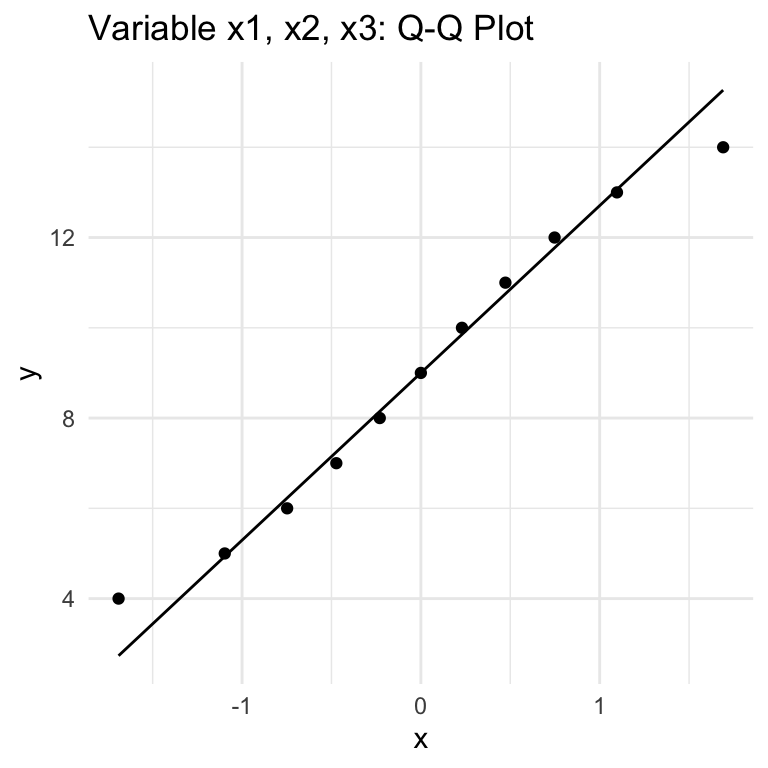
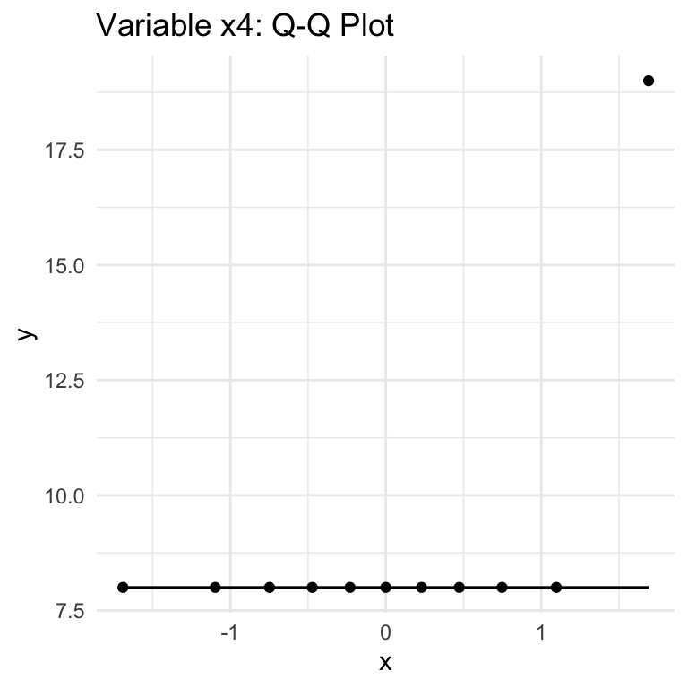
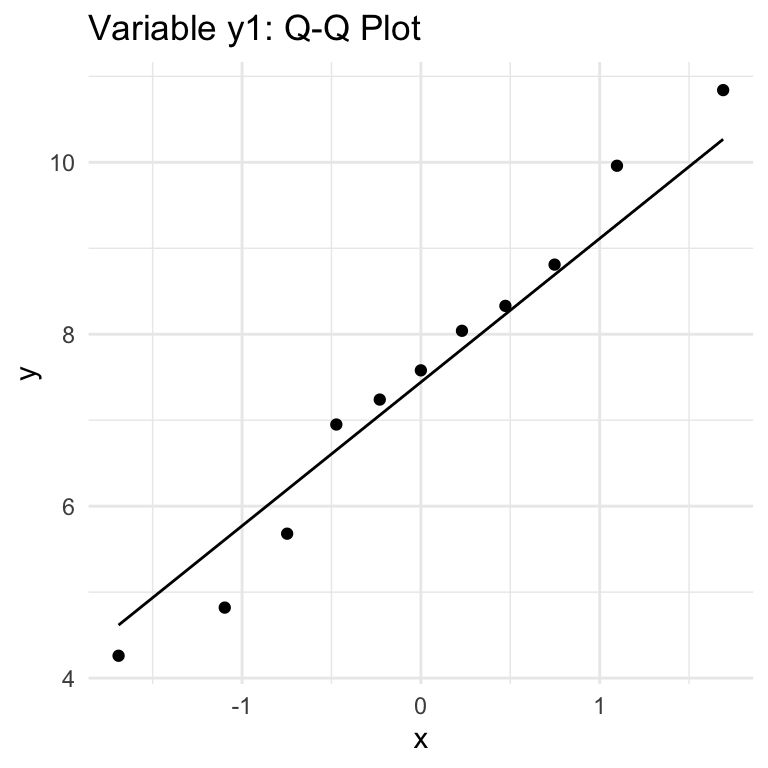
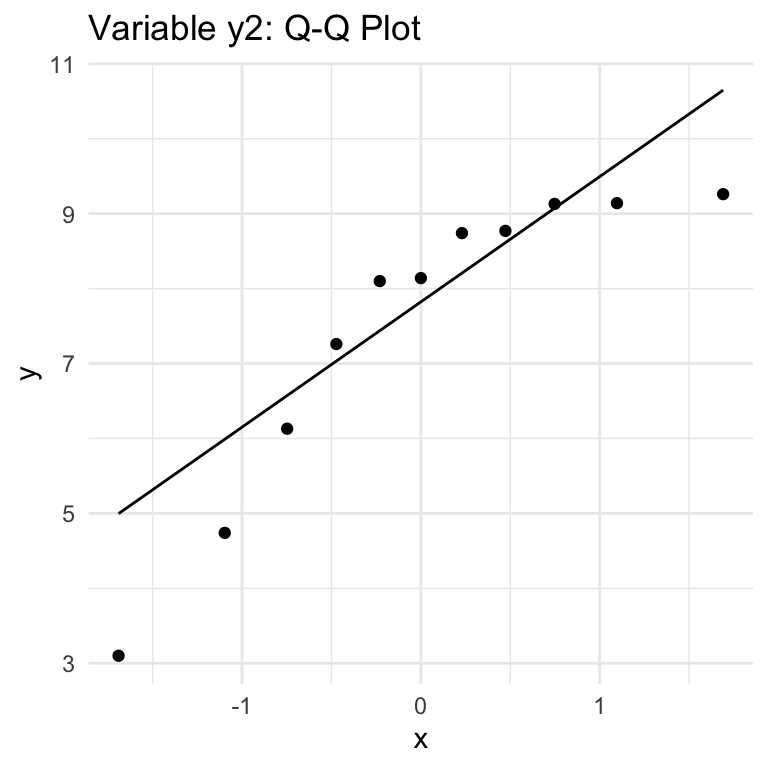
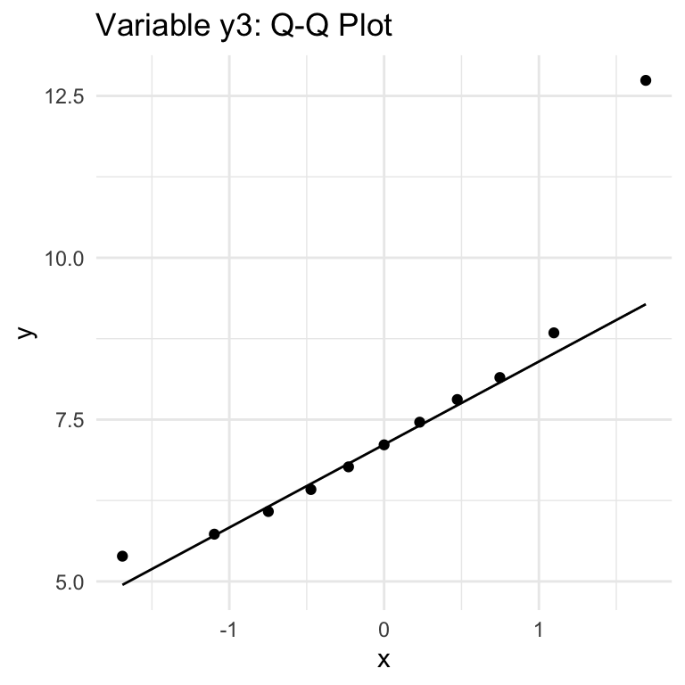
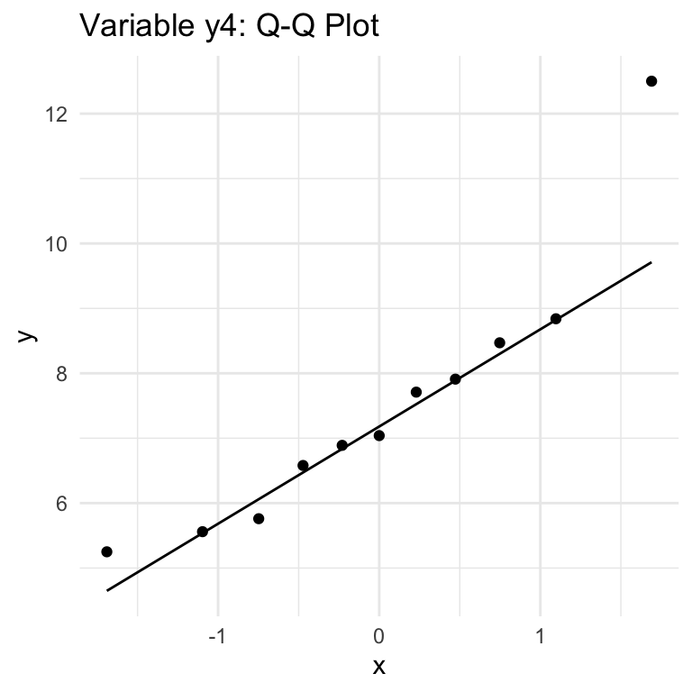
From these six plots we see:
variables x1/x2/x3 & y1: looks like a fit with Normality for the most part.
x4, y2: no
y3, y4: yes, BUT with outliers that are cause for concern.
Shapiro-Wilk Test
So we have some initial conclusions from Q-Q plots, which provide a quick visual guide. Let’s compare to results from Shapiro-Wilkes test.
Shapiro-Wilkes works similar to to Breusch-Pagan test, but with reference to Normal distribution:
NULL hypothesis is Normality, p-value indicates likelihood of the dataset being consistent with the Normality null hypothesis.
Low p-value indicates lack of support for the NULL hypothesis and suggests data set may not fit Normal distribution.
The variables with dots are sure signs of outliers.
Outlier conclusions:
x4, y2, y3, y4 all have outliers: use caution with Pearson correlation involving these metrics.
Independence of Observations
criteria: each pair of observations in the data set is independent of each other, do not influence each other.
method: knowledge of the origin and meaning of the data.
Domain knowledge is needed for this one. We can’t make any conclusions on the Anscombe dataset because we don’t know anything about the origin of the data or what it represents.
notes:
check assumptions
state if they are violated
what to do if not met? other options
Is Correlation Valid for this Data Set?
We know that Anscombe’s Quartet is designed to show how summary statistics can be misleading. But for the sake of completion here, let’s review whether quartet of variable combinations ‘pass’ or ’fail’ against the 6 assumptions:
Linearity: pass for case I (var x1 and y1), case III (x3 and y3); fail for case II and IV.
Homoscedasticity: leans toward fail for all, although hard to make solid conclusion on small sample size.
Normality: pass for case I; fail for others, where at least one variable fails normality test
Interval or Ratio Scale: pass for all.
Absence of Outliers: pass for case I; fail for others, where at least one variable has outliers.
Independence of Observations: inconclusive - requires domain knowledge.
In summary, case I looks like a reasonable case for Pearson Correlation, while others have one or more fatal flaws that make Pearson Correlation misleading. This is fairly obvious on initial view of the data, but further reinforced by examining the assumptions individually.
Conclusion
This is a manufactured case that may not reflect common real-world data situations, but is hopefully useful in understanding how to think critically about Pearson correlation - including using visual and statistical methods to determine how applicable/reliable/representative Pearson correlation may be in any given situation.
This highlights the importance of understanding correlation as a summary statistic that can only tell you so much about the relationships in the data - and in some cases, nothing at all. At the end of the day, if the correlation coefficient can’t tell you something about what to expect from the dependent variable when the independent variable changes, it is not helpful. As such, it is best used within early stages of exploratory analysis, supplemented by visualization (at minimum), pointing the way toward potential further analysis, and not as a final conclusion.